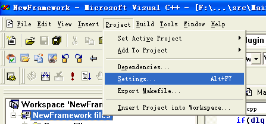
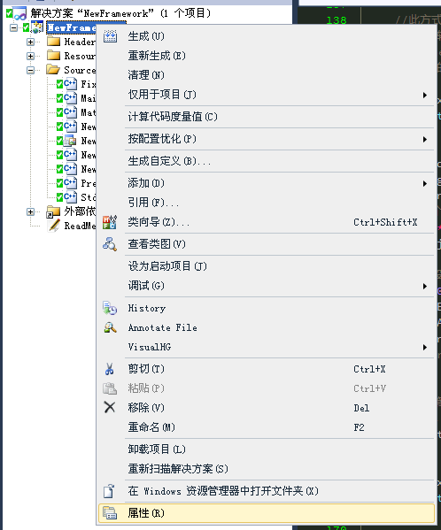

前言¶
O’Reilly有一个HeadFirst系列，面对完全的初学者的书籍。因为经常用到GDAL，也碰到过一些问题，所以从头开始，写一些经验，给大家分享。网上也有许多GDAL的文章，除了李民录老师写的，大部分不太系统，虽然有系统文档，但都是英文的，很多人都不想看，因此写这个文档，算是总结，也帮新手少走点弯路。本系列主要涉及的是GDAL的各个接口和调用，以及一些基础概念的阐述，不涉及其他应用方面，GDAL更新也比较快，所以本文也只能介绍主要的读写接口以及GDALWarp部分，不涉及更深入的内容。如果想学好，推荐还是认真阅读英文文档。
本文主要注重于栅格影像处理，矢量ogr库暂时没有涉及（以后可能会添加），主要使用 c++ 语言，vs2010 或 vc6 平台下使用。
GDAL是什么¶
GDAL 是 Geospatial Data Abstraction Library 的缩写，是一个在X/MIT许可协议下的开源栅格空间数据转换库。它利用抽象数据模型来表达所支持的各种文件格式。它还有一系列命令行工具来进行数据转换和处理。OGR是GDAL项目的一个分支，功能与GDAL类似，只不过它提供对矢量数据的支持。
有很多著名的GIS类产品都使用了GDAL/OGR库，包括ESRI的ArgGIS平台，Google Earth和跨平台的GRASS GIS系统。
GDAL能做什么¶
GDAL可以用来对各种栅格数据格式进行读写，也可以用于格式相互转换，图像几何校正、重投影、重采样等。
GDAL中包括很多算法，比如surf匹配算法，TPS纠正等几何纠正算法，OGR库中也可以进行拓扑运算，因为是开源的，所以部分算法可以参照源码，如TPS中矩阵运算可以添加Aramdillo库，匹配算法也可以借鉴学习。
如何使用GDAL库¶
很多新手不知道下载的编译完成的库如何使用，下面以vc6和vs2010中如何使用为例，给大家讲解下。本部分参照 GDAL源码剖析（六）之GDAL开发及其调试 ,其中讲的已经比较清楚,本段简单介绍下载或编译完成的库如何使用。
Note
- 如果不关心如何编译调试GDAL的话，可以直接使用 框架 ,里面有已经设置好的环境和基础的两影像相加的示例.
- 没有C++基础的新手，推荐阅读下 C++静态库与动态库 ，对库的解说比较好.
目录说明¶
下载完成的GDAL库，一般有 lib include html data bin 几个文件夹，这些是必须文件，其他有些是调试或绑定其他语言用的文件夹 ,下面分别介绍其作用:
- lib 里面包含 gdal_i.lib 库文件
- include 包含头文件
- html 包含html文档说明
- data 包含GDAL的数据文件，例如epsg文件、dxf头文件、S-57 定义文件等，可以设置
GDAL_DATA环境变量来改变其路径 - bin 工具集，包括一个dll文件。
安装¶
新建工程，在新建工程中添加 GDAL 目录，将上述文件夹中的 lib include 文件夹拷贝到新建的 GDAL 目录中，至此完成安装。
Attention
- 也可以在工程设置中设置所在路径，本步骤并非必须步骤，仅为了方便下面介绍以及新手理解
工程设置¶
vc6¶
打开或新建vc6工程，在菜单中找到工程->设置(Project->Settings)，如下所示：
设置Include路径，点击 c++ Tab页,在 Category 中选择 Preprocessor,第三项,添加Include目录中,添加gdal的include文件夹路径:
设置Lib路径,点击 Link Tab页,在 Category 中,选择 Input ,第一项中填入 gdal_i.lib ,第四项中添加gdal中的lib文件夹路径：
Attention
- 编译完成后，需要将
bin或者lib文件夹下面的DLL文件全部拷贝到输出目录中（Debug或Release文件夹中）
vs2010¶
打开或新建vs工程，右键设置项目属性，如下所示：
设置Include路径，点击 C++ 填写第一项，在附加包含目录中添加gdal的Include文件夹路径：
设置Lib路径,点击 链接器 ,在 常规 中, 附加库目录 里添加gdal中的lib文件夹路径：
设置Lib库，点击 链接器 ,在 输入 中, 附加依赖项 里添加填入 gdal_i.lib：
Attention
- 编译完成后，需要将
bin或者lib文件夹下面的DLL文件全部拷贝到输出目录中（Debug或Release文件夹中）
这样就完成了环境设置，接下来就可以按照 栅格数据读写 的例子读写数据了。
OGR库说明¶
现在仅初步使用 OGR 库，大部分只是翻译文档,没有深入使用，有些翻译并不准确。如有不确定的地方，请参照文档。在 GDAL2.0 中， OGR 库和 GDAL 库的数据集已经合并，其他部分基本没变，且 v2.0 版本尚未发布，现有翻译参照 v.1.11 来写。